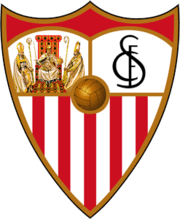

Sevilla

Sevilla Fútbol Club, S.A.D. , or simply Sevilla, is Spain’s oldest sporting club solely devoted to football. Sevilla FC is based in Seville, capital and largest city of the autonomous community of Andalusia. Sevilla FC is one of the teams that play in Spain’s top flight, La Liga. The club was formed on 25 January 1890, Scot Mr. Edward Farquharson Johnston being their first president. A few years later, on 14 October 1905, the club’s articles of association were registered in the Civil Government of Seville under the presidency of the Jerez-born José Luis Gallegos Arnosa.